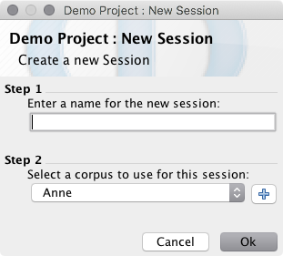

Session List
A session in Phon is a transcript of a portion of field data targeting one or more participants in a project.
Phon is designed to facilitate the transcription of media recordings (audio or video) taken of participants in a study. As such, a Phon session usually corresponds to one media recording and the transcript of this recording.
A session is organized into a series of records which correspond to individual utterances.
Sessions can be viewed in the Project Manager window. When a session is selected, the number of records in that session and the date it was last modified are displayed at the bottom of the list of sessions.

Session Actions
The following actions are availble from Project window menu and the session list contextual menu. You may access the session contextual menu by right-clicking (or CMD+click on macOS) inside the corpus list control or by clicking the Session title label in the Project Manager window.
New session

If a __sessiontemplate.xml session file exists in the corpus folder new sessions will be created with the contents of the template file. To edit the session template for a corpus choose Open session template from the corpus contextual menu.
Open session
Open a session in the default mode.
-
Ensure that the Blind transcription box is deselected to open a session in default mode. Click the desired corpus, and double-click on the session that you would like to open.
The selected session will open in the Session Editor.
Open session as transcriber (blind mode)
Transcribe in multi-blind mode.
From the Project Manager window:
-
Select the Blind transcription check box and double-click on the session that you would like to transcribe.
This will open a dialog prompting you to indicate whether you are a new or existing transcriber. -
- If you are a new transcriber, choose the first option and enter your full name as well as a username. If you wish to use a password, select Use password and enter your chosen password into the two fields provided (the text in both fields must match). There is no password reminder function in Phon. Ensure that your password is memorable or store it in a safe location. Click Ok to continue.
- If you are a returning transcriber, choose the second option and select your username from the list. If you have chosen to use a password, you will be prompted to enter that password now. Do so and click Ok.
Note: Upon opening a session for the first time, there will be an empty record at the beginning of each session.
Rename session
Change a session name in your project.
-
Right-click (CTRL+click) on the session you wish to rename, and choose Rename Session from the context menu.
The Rename Session window will appear. -
Follow the steps in the Rename Session window and click OK.
You will be returned to the Project Manager window, with the session renamed.
Delete session
Remove a session from your project.
-
Right-click (CTRL+click) on the session you wish to delete, and choose Delete Session from the context menu.
A dialog will appear asking you to confirm that you would like to delete this session and informing you that this action cannot be undone. -
If you are unsure, click No. To continue and delete the session, click Yes.
The session will no longer appear in the Project Manager window.
Duplicate session
Create a copy of a session within the corpus that contains it.
-
Right-click (CTRL+click) on the session you wish to duplicate, and choose Duplicate Session from the context menu.
A duplicate of your session, with the suffix "(copy)" will appear in the Project Manager.
Move session
Move a session to a different corpus.
-
Right-click (CTRL+click) on the session you wish to move, choose Move Session To from the context menu, and click on the corpus you wish to move your session to.
A dialog will appear asking you to confirm that you would like to delete the session from its original location. Click Yes. Your session will be moved to the selected corpus.Note: You may move your session to a corpus within the current project, to another open project, or to any project in your workspace folder.